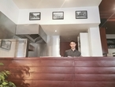
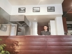
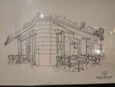
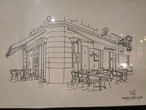
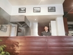
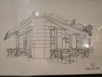

Suivez-nous sur nos réseaux sociaux pour découvrir nos créations chaque semaine
 

 

TheLittleFootBistro est ouvert depuis une vintaigne d'année. C'est il y a 5ans que Monsieur Josas walter l'a repris avec son frére et qu'ils on décider de faire prospérer l'affaire. En 2018 walter c'est retrouver tout seul. Depuis novembre 2019 il à était rejoin part sa femme. À deux ils veulent changer l'aspect de la restauration du midi dans ce quatier de bordeaux
En novembre 2019 ils ont étaient rejoin aussi par un nouveau chef de cuisine Jacques. venez découvrir sa cuisine bistrot créée avec des produit frais et de saison qui saura réveiller vos papilles. Toutes les préparations sont réalisées sous vos yeux.
Pour le découvrir un peut plus il à était formé au CFA de bordeaux lac en alternance dans un resteau de bordeaux le gavinies. Pour le bp il poursuit sa formation auprés de Mr Pascal hilaire chef et patron du bistrot de france à pessac. Il fini sa formation au canopé café à merignac auprés d'un ancien chef deux étoile à calvi en corse
Il y a plusieur possibilité pour vous de régaler vos papille tout les jours le chef vous prépare un menue du jour à base de produit du marché. Vous pouver aussi choisir de manger à la carte et vous régaler de bon petit plat plus travailler. Où alors vous avais un évenement à célébrer (un anniversaire, un mariage ou un diner pro...). Vous pouver contacter le chef sois par le formulaire de ce site ou directment au retaurant pour une proposition de menue de groupe.
Le restaurant vous accuille du lundi au samedi au 75 rue des Remparts à bordeaux :
| lundi | 8H à 19H |
| mardi | 8H à 19H |
| mercredi | 8H à 19H |
| jeudi | 8H à 19H |
| vendredi | 8H à 19H |
| samedi | 8H à 19H |
Une demande de groupe ?
Contactez nous afin de vous faire une proposition personnalisée.
Suivez-nous sur nos réseaux sociaux pour découvrir nos créations chaque semaine

